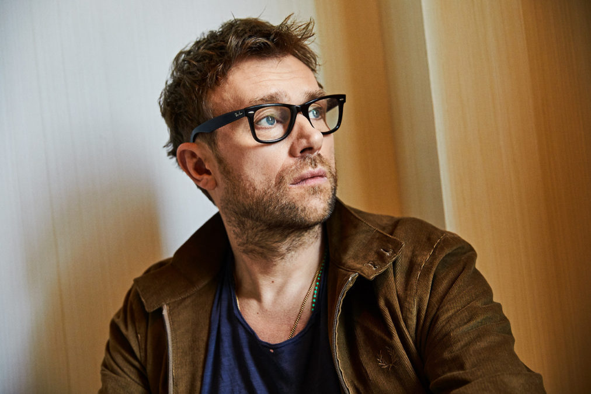
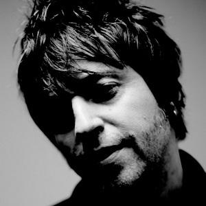
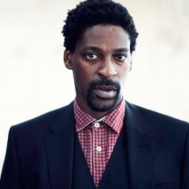
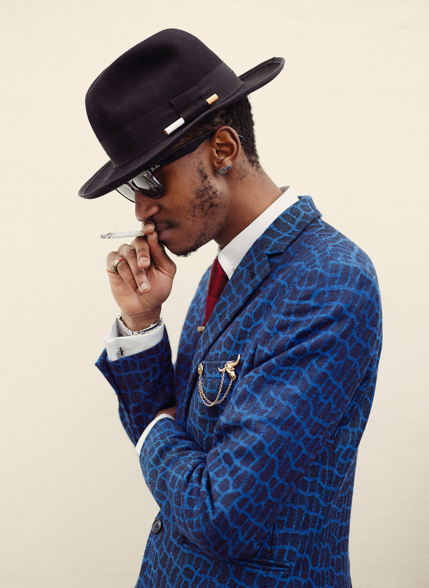
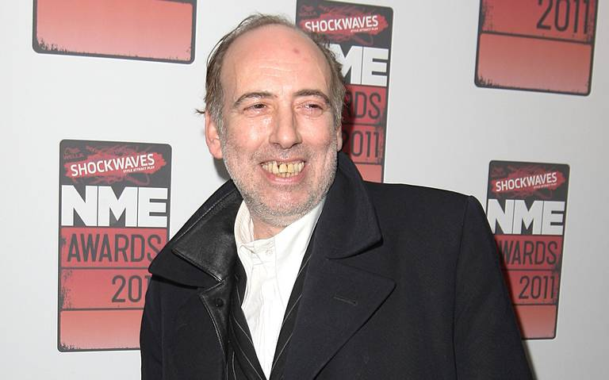

| Aquí está |
|---|
Damon Albarn: Damon Albarn es un músico, cantante, compositor y productor de discos británico, líder y letrista principal de la banda de rock Blur y como cofundador, vocalista principal, instrumentista y compositor principal de la banda virtual Gorillaz.
Cass Browne: Browne era un miembro de la banda The Psychotics, (siendo el baterista) que más tarde se convirtió a Senseless Things en 1986. En 1995, las canciones de Senseless Things alcanzaron a ser uno de los 20 mejores éxitos del Reino Unido, –Jamie Hewlett diseñó muchos artes de la banda por ser fanático de la banda. Ese mismo año, la banda se separó. Tras esto Brown formó una nueva banda Delakota, con la que realizó una gira durante 1998 a 1999. Browne también trabajó con Damon Albarn como baterista del álbum Mali Music, en 2002.
Jamie Hewlett: Jamie Christopher Hewlett es un historietista y diseñador británico, conocido por ser el cocreador del cómic Tank Girl y cofundador de la banda Gorillaz junto a Damon Albarn. además de estar presente en varios proyectos de animación, colaborando con animadores como J. G.

Remi Kabaka Jr.: Remi Kabaka "Jr." es un productor musical, director de arte y percusionista, conocido por ser la voz de Russel, personaje del baterista de la banda británica virtual Gorillaz. También creó –y sigue activo– en parte del proyecto DJ de: Gorillaz Sound System, en 2011.
Seye Adelekan: Traducción del inglés-Seye Adelekan, a veces conocido como Seye, es un bajista, músico y cantautor nigeriano británico, mejor conocido por su trabajo como bajista en vivo de Gorillaz.
Mick Jones: Michael Geoffrey Jones, más conocido como Mick Jones, es el primer guitarrista, cantante, compositor y cofundador de la banda punk británica The Clash y, además, fue el líder y fundador de Big Audio Dynamite. Actualmente, participa en Carbon/Silicon.
